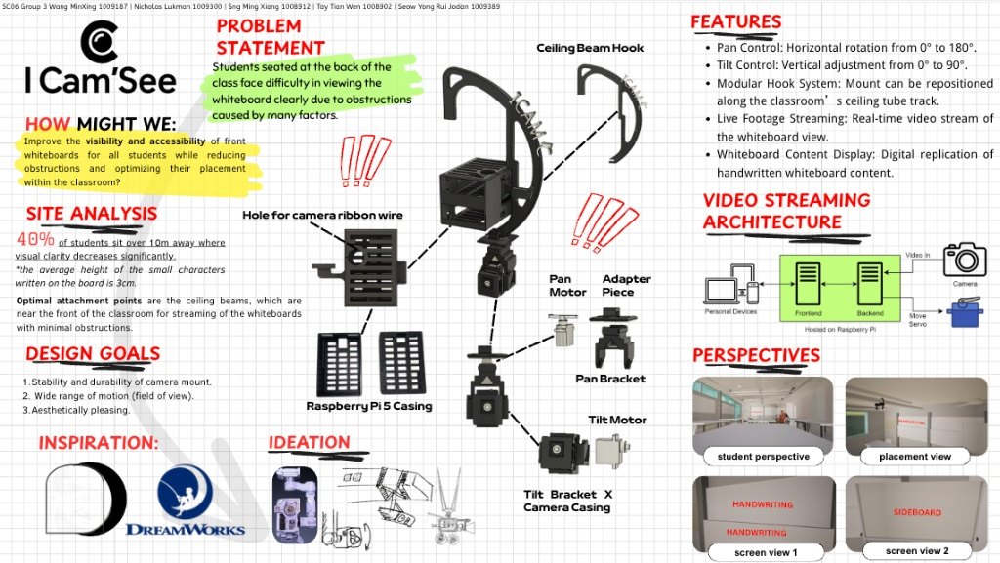
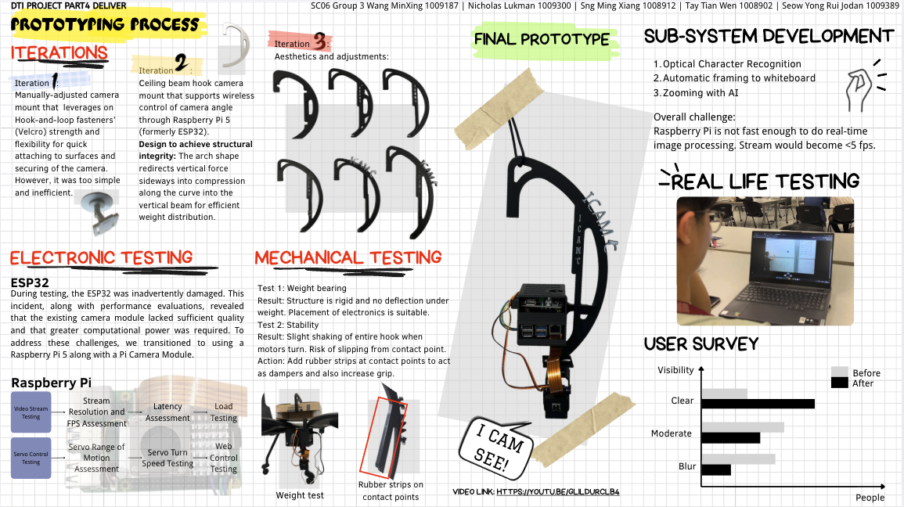
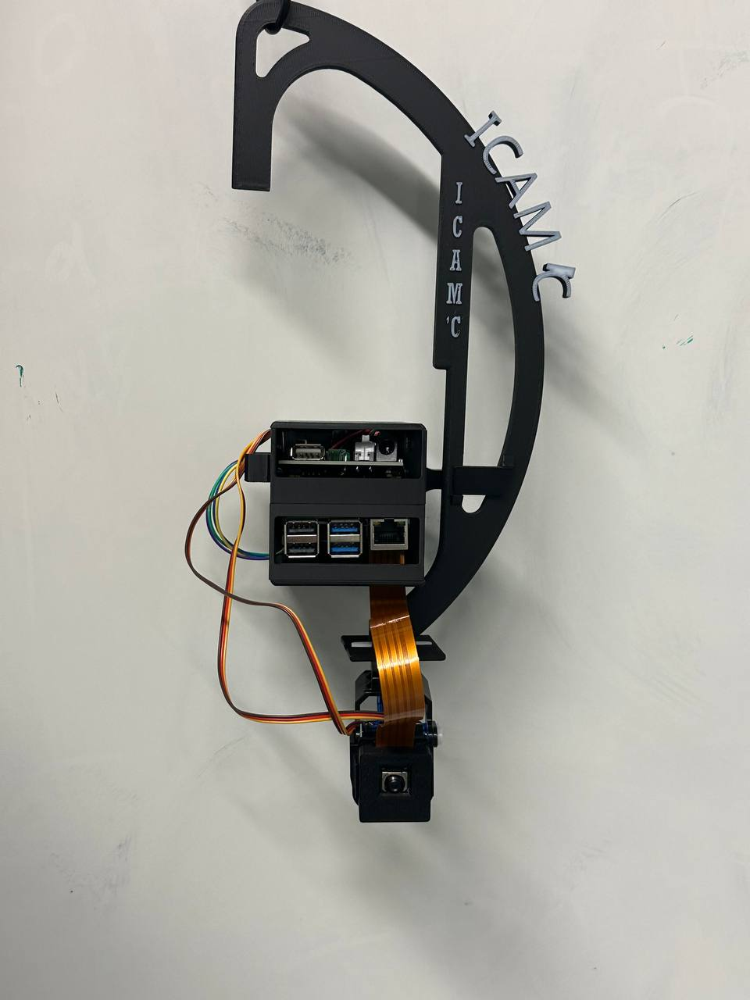
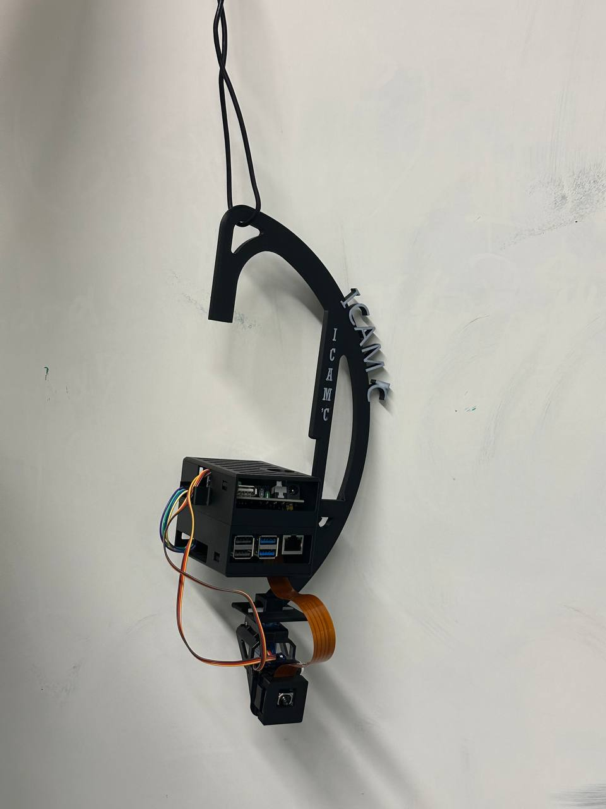
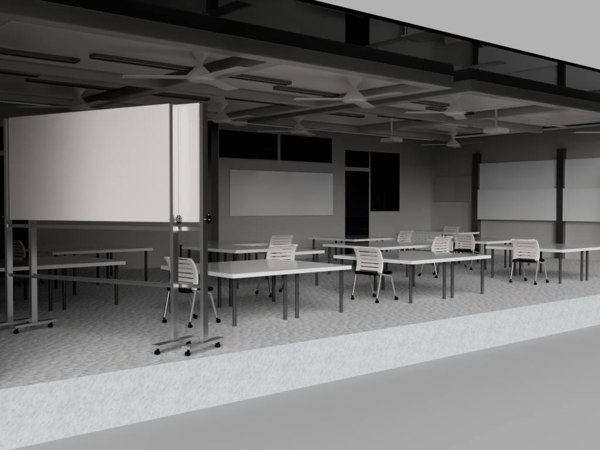
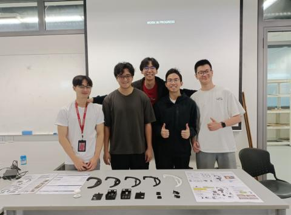

I Cam'See
IoT-Integrated Camera System for Classroom Accessibility
Project Overview
Developed an IoT-integrated camera system designed to improve classroom accessibility. The project focused on creating a smart classroom environment where hardware placement and digital simulations bridged the gap between physical spaces and student utility.


Key Features
Articulated Camera Control
Integrated pan and tilt motors allow for precise field-of-view adjustments, featuring horizontal rotation (0° to 180°) and vertical tilt (0° to 90°).
Modular Hook System
A custom-designed mount that can be easily repositioned along the classroom's existing ceiling tube tracks to optimize placement and bypass obstructions.
Live Footage Streaming
Real-time digital replication of handwritten whiteboard content, streamed directly to a frontend interface on students' personal devices.
Raspberry Pi 5 Architecture
Custom 3D-printed casing housing a Raspberry Pi backend that seamlessly manages both the video stream encoding and the mechanical servo movements.
Physical Prototyping
Iterative physical assemblies showcasing the custom modular mount and the Raspberry Pi-driven articulated camera system.


My Contributions
As the Lead for 3D Modeling and Visualization, I was responsible for the end-to-end digital twin creation and environmental simulation.
01. Primary 3D Modeler
Designed the full-scale classroom environment in Autodesk Fusion, facilitating spatial analysis for optimal hardware placement.

02. Visualization & Rendering
Produced high-fidelity Twinmotion renders and cinematic video walkthroughs to demonstrate system utility and validate camera placements.
03. Holistic Project Support
Collaborated on technical documentation, poster design, and system architecture to ensure a cohesive final submission.
Team & Credits

"The 'I Cam'See' development team during the final project showcase. On display are our physical 3D-printed prototypes, including the iterative designs of the modular ceiling mounts."
Project Team Members:
- Wang MinXing
- Nicholas Lukman
- Sng Ming Xiang
- Tay Tian Wen
- Seow Yong Rui Jodan